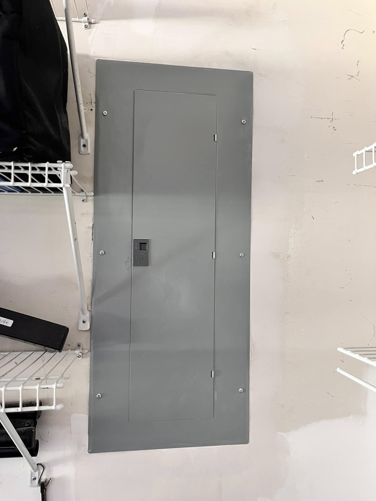

Trang chủ / Moore Electric — Ocean Springs, Mississippi
Moore Electric — Ocean Springs, Mississippi
THỢ ĐIỆN OCEAN SPRINGS.
Từ khu trung tâm Government Street đến St. Martin, Fort Bayou và Gulf Hills, Ocean Springs chỉ cách đầu cầu vịnh Biloxi vài phút chạy xe.
Dù nhà quý khách là nhà cổ ven vịnh hay bị nhảy cầu dao hay nhà mới cần gắn cổng máy phát điện dự phòng và đèn ngoài trời chịu ẩm mặn, quý khách nói chuyện trực tiếp với Devin từ cuộc gọi đầu tiên.
Chủ nhà Ocean Springs thường gọi chúng tôi vì
- Gắn bộ khóa liên động interlock & cổng máy phát điện 30A/50A ngoài trời trước mùa bão
- Thay cầu dao tổng ngoài trời, hộp đồng hồ và tủ điện cũ bị hơi muối ăn mòn
- Lắp đèn bến tàu, hiên nhà, đèn mái hắt chịu ẩm cao vùng Vịnh
- Lắp quạt trần cao và dimmer cho phòng khách hoặc hiên lưới
- Chống sét lan truyền Type 1 / Type 2 gắn tại tủ điện cho cả ngôi nhà
- Tìm lỗi và sửa nhanh ổ cắm mất điện, đèn chớp nháy và cầu dao hay nhảy
Quy trình làm việc
Gọi hoặc nhắn ảnh
Gặp trực tiếp Devin qua số (228) 224-9150 — không qua tổng đài.
Khảo sát tận nơi ($75)
Được trừ lại vào tiền công nếu làm việc. Kiểm tra kỹ tủ điện thực tế.
Báo giá bằng văn bản
Rõ từng hạng mục trước khi đụng tay vào làm — không phát sinh bất ngờ.
Làm gọn & thử tải
Đánh dấu từng cầu dao rõ ràng, siết chuẩn lực và kiểm tra tải an toàn.
Hãy gọi cho chúng tôi.
Báo giá rõ bằng văn bản. Tôi tự nghe máy.
$75 khảo sát & đánh giá · Xem bảng giá